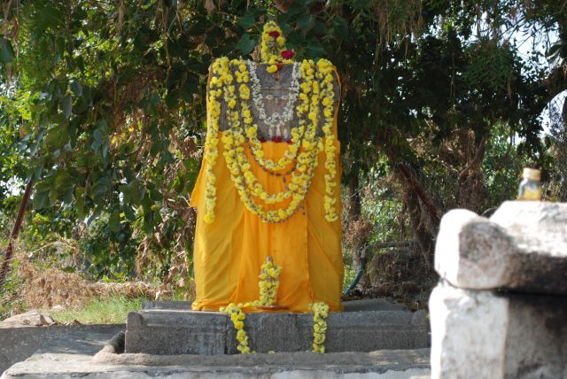

Home
|
Video
|

Rasa Rushihi Sri Appanacharyaha
Devata Sri Raghavendra Guruhu
Mae Ishtaarthha Siddhaye
I wish to share some important facts about
the Miracle, Siddhi and the Sanctity of our Sanctum - Japadakatti Bichali.
Sunday October 25th.09, I had been to Bichali along with my son Jaiteerth. By
the time we reached Bhikshaalaya it was early morning 7 am. Found every where
the profound immense silence. Many residents of Bichali, about 90% have lost
their houses, food grains, home articles, crops and all. People were simply
afraid, no joy on their faces. They looked as though they have become
desperate and confused always thinking about the future. What to do next?
Worried about the safety and the security of the property which they owned! The
hopes of lurking desire was no more ! As they have not still come out from
the Rudraavatara of Varunadeva and the horror of the flood. They cannot
forget. Water plays an important part in our life and living. Without
Water we cannot survive and the incessant rain and abundant water will
ruin us. This is the same fate right from Gillesugur Camp - Bichali -
While seeing the people of Bichali, my memory went back to
the days of our Kind Gururayaru's Divine Help to the people of Tanjore. Tanjore
suffered heavily for 12 years due to the severe famine. After the visit
of Tanjore king VijayaRaghavaNayak to Kumbhakonam Rayaru immediately the
very next day went to Tanjore with all the valuables including the food grains
to face the grave situation of famine. First gave all this to the king and
asked him to distribute to the public. Sri Raghavendrateertharu after taking a
round in Tanjore in the evening, Prayed the Lord Sri Hari and Dhaanya Laxmi,
three days and three nights sat in the Dhaanyaagara and observed fasting -
Upavaasa. After three days when they opened the door of Dhaanyaagaara they
found Rayaru sitting amidst the full of food grains in that Room. Then
performed Yaaga for a month continuously and permanently removed the famine .It
is quite amazing that from that day onwards Tanjore has never experienced
any famine even to this day. Rayaru thus distributed, enhanced and enriched the
Punya.
The Japadakatti Bichali environment is plunged and
merged in profound and immense silence like a Tapovana. Only the sound of the
flow of Tungabhadra will be echoing and heard. Sacred and holy Ek
ShilaBrindavana installed by Sri Appanacharyaru with great devotion and
affection as per the order of Rayaru is a Siddhi place quite safe. The big
trees have washed away, 13 pillars of the Madhavaram bridge is collapsed and
the long road is washed away completely and the means of transportation is
fully cut off. Still all the Sacred idols are safe. Water was more than 20-25
feet above the EkShila Brindavana, though the Tungabhadra flow was
forceful, yet nothing happened to the Daivee Sampattu of our Japadakatti. Quite
safe, standing majestically, proclaiming to the world that this is the real
Siddhi of Sri Hari - Sri Vayudevaru - Sri Raghavendrateertharu. They have moved
not even an inch.
This is nothing but the Miracle of Sri Raghavendrateertharu.
So our Rayaru's greatest devotee Bichali Sri Appanacharyaru has rightly
said in Sri Gurustotra:
AGAMYA MAHIMA LOKE SRI RAGHAVENDRO MAHA YASHAAHA
As already described Rayaru stayed in Bichali along with
Appanacharya for a long time. The most important and the precious time
Rayaru had spent in Bichali. Lived in the house of Appanacharya accepted
his seva happily. In the middle of Tungabhadra there was a wide hilly rock bed.
Rayaru and Appanacharyaru together were going there and used to sit
for hours together discussing several matters pertaining to knowledge and
Acharya Madhwa Philosophy. In other words we can say that was nothing but a
Divine Satsanga. There Appanacharya built a plarform - katti that was
very famous and called as Sanyasikatti. This went on for a long time. In course
of time owing to the collection of thick sand and the growth of the trees made
this Sanyasi Katti invisible. Today the recent flood has washed away the sand
and the trees, everything is clearly visible. We are fortunate enough,
that we saw SANYASIKATTI. As though it is the will and wish of Rayaru that the
famous Sanyasikatti should be introduced to the world
devotees from now on wards and the will of Sri Hari and Sri Vayudevaru.
The entire daily divine routine of Pooja, Alankara,
Naivedya, Vaishwadeva, Hastodaka are all dear to our Sri
Raghavendrateertharu at the sanctum of Japadakatti. It is quite appreciable
that even during this period that Sri Teerthha Kshetra Japadakatti Bichali
Appanacharya Ashtottara Shata Seva Welfare Trust has conducted the Ashtottara
at this sanctum on the second Thursday without fail and Hastodaka - Anna Daana
are continued towards the welfare of the world devotees.
AYUHU KEERTIM PRAJAAN DADUHU
What a noble and divine global project this Ashtottara Shata
Seva Welfare Trust. Words fall short to praise this great task. By the Anugraha
of Rayaru even the small silver Dandakashthhaka which was at the Brindavana is
quite safe along with the eyes and the Naamas. Even the Nagaloka
built of mud is amazingly safe. The Ek Shila Brindavana is open to the
Sky, that was the place where our Appanacharya had the Open University,
Sri Vibudhendrateertharu, Sri Sripadarajaru, Sri Jitamitraru Sri Vyasarajaru
and Sri Raghavendrateertharu have all performed Japa, Tapa and Anushthhaana. So
lot of Siddhi and Divine Bliss is there with full of wonderful vibrations.
We forget ourselves with satisfaction and gratitude. Surrender to this Sanctum
just as our Bichali Appanacharyaru has surrendered and squatted before Rayaru.
Gnyane Viraage Hari Bhakti Bhaave Dhruti Sthiti Pramaana
Baleshu Yoge
Buddhou Cha Naanyo Hanumat Samaanaha Pumaan Kadaachit Kwach
Naiva
Such Hanumanthadevaru's Bhaktaru is our Rayaru. It
clearly clarifies that Rayaru and Hanumanthadevaru took the responsibility to
save this sanctum full of Siddhi.
Bhaktanugraha Premi Sarvatra
Sarva Karyeshu Jaya Pradaata
TVAMEVA SARVASWA MAMA DEHI KARAVALAMBAM
GURU RAGHAVENDRATEERTHA PRABHO
RAKSHA MAAM RAKSHA MAAM
Today the world devotees are pronouncing loudly with
firm faith:
NAMBI KETTAVARILLAVO EE GURUGALA
||
BHIKSHAALAYA - BICHALI SRI APPANACHARYA PRIYA
MANTRALAYA SRI RAGHAVENDRATEERTHA
GURUBHYO NAMAHA ||
|
Copyright @2009 https://patwari.org |